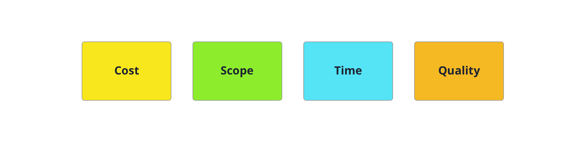

React, D3 and the dataviz ecosystem

Online
Next up
- D3
- React
- React + D3
- Choosing a Project
What is D3.js?
- Data-Driven Documents
- Low level, General Purpose Visualization Library
- Manipulates data based documents
- Open web standards (SVG, HTML, CSS and now Canvas)
- Allows interactions with your graphs
How does it work?
- Loads data
- Binds data to elements
- Transforms those elements
- Transitions between states
D3 Demo

D3 Niceties
- Based on attaching data to the DOM
- Styling of elements with CSS
- Transitions and animations baked in
- Total control over our graphs
- Amazing community
- Decent amount of publications
D3 v4 Update
- More modular
- API improvements
- Breaking changes
- Highly adopted
D3 Data Joins
Transform the DOM by selecting elements and joining to data
Selections
- Subclass of array
- Provides methods to create and manipulate selected elements
- Array of arrays of elements
Setup
// We have some random info
let data = 'randomStringToCreateAnArray'.split('');
Simplest Selection
// We create the root list element
let list = d3.select('.js-container')
.append('ul');
Data Join
let dataJoin = list.selectAll('.item')
// an empty selection, since the list container was empty
// looking for instantiations of data
.data(data);
// data, which would be bound to a
// selection
Update, Enter and Exit Pattern
Functions that set properties
- .text()
- .property()
- .style()
- .attr()
Update
dataJoin.attr('class', 'update');
dataJoin
.attr('foo', function(d) {
return d.foo;
});
Enter
// for every time that we see data
// but we do not see an element
dataJoin.enter()
.append('li').classed('enter', true)
// we create an element
.merge(dataJoin)
// we merge the update and enter groups and apply an operation
.text(function(d) { return d; });
Exit
// Remove all elements as needed
dataJoin.exit().remove();
Resources
D3 Patterns and Libraries
D3 Component Patterns
 http://c3js.org/
http://c3js.org/
 http://eventbrite.github.io/britecharts
http://eventbrite.github.io/britecharts

D3 Testing
Dynamic Child Components
- Unique 'key' to each child component rendered
- More efficient
- Similar to D3's data binding
React Fiber
- New reconciliating algorithm
- Renderer and Reconciler are separate
- From batching DOM operations, now React can...
- Prioritize tasks
- Split into chunks and schedule
- Parallelize operations
Commonalities
- Help us with the DOM
- Pure functions
Challenges
- D3 creates and transforms the DOM
- React also transforms the DOM, and keeps track of it
- Not meant to work together
React + D3 Approaches

D3 within React
- Renders root svg element
- D3 creates chart in 'componentDidUpdate' hook
- Block chart components updates
D3 within React
Pros/Cons
- ✓ Works fine
- ✓ Easiest when visualization is already implemented
- ✗ Not idiomatic on React
- ✗ A bit nasty
React Faux DOM
It's a way to use existing D3 tooling but render it efficiently through React with the React ethos.D3 within React the right way
React Faux DOM
Pros/Cons
- ✓ Use all D3 APIs
- ✓ Good integration with already built D3
- ✓ Server Side Rendering
- ✗/✓ Need to use React Animations
- ✗ Less performant
- ✗ Limited to small/medium size dataviz
Lifecycle Methods Mapping
- Lightweight React Component Wrapper
- D3-only file with create, update and unmount methods
Lifecycle Methods Mapping
Pros/Cons
- ✓ Easy to integrate D3 on
- ✓ Flexible, could encapsulate any chart
D3 for the Math,
React for the DOM
- D3 is used for math and formats
- React rules the DOM
D3 for the Math,
React for the DOM
Pros/Cons
- ✓ Consistent with React ways
- ✓ Fewer abstraction levels
- ✗ A lot of work upfront
- ✗ D3 Reimplementation of certain parts
- ✗ Limited to SVG rendering
React + D3 Libraries
Research Insights
- Non-maintained libraries
- Not easy to keep up with D3 and React
- D3 v4 cleaned up the field
- Comparative

VictoryJS
- Easy to get started
- React Native option

Recharts
- Really well tested
- Great docs

react-vis
- react-motion animations
- Lack of tooltips
- Sunburst and Sankey
Demo
https://tinyurl.com/talk-react-d3Choosing a project
Choosing criteria
Quality
- Well tested
- D3 V4
- Great docs
Time
- Long term investment?
- Needs to be done ASAP?
- Team skills
Scope
- Highly customized vs basic charts
- One-off work vs dataviz heavy product
Cost, Resources
- Budget
- Training
Conclusions
- D3 and React can work together
- They both move fast
- Hard to decide!
Thanks for listening!
- Twitter: @golodhros
- Slides: http://golodhros.github.io/react-d3
D3 Resources
React-D3 Resources
What can you do with D3?
Bar charts

Pie charts

Bubble charts

Choropleth

Map projections

Dashboards

Algorithm visualization

Artistic visualizations
Interactive data explorations